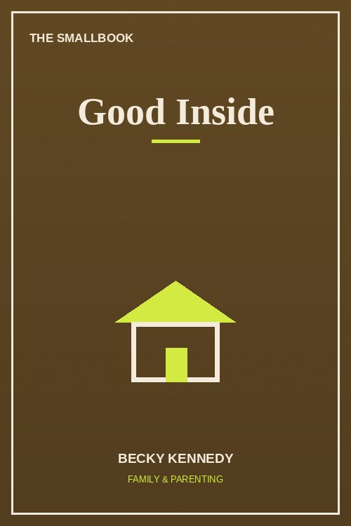

Library › Family & Parenting
Good Inside - Summary & Key Lessons

A revolutionary approach to raising kids, and reparenting yourself.
📖 OPEN THE FULL INTERACTIVE BREAKDOWN →🌐 Read it in Hindi, Hinglish, Gujarati, Tamil & 22 more languages, with audio.
💡 The Big Idea
Clinical psychologist Becky Kennedy, known to millions as Dr. Becky, built her method on two words: good inside. Assume the child's goodness and the parent's goodness, then get curious about behaviour instead of shaming it. The book teaches sturdy leadership: boundaries held with empathy, tantrums weathered as skill deficits, repair after parental blowups, and the reparenting of the adults whose own childhoods keep hijacking their reactions.
🧠 The 8 Key Lessons
Lesson 1: Two Things Are True
The Good Inside Philosophy
The signature move: hold the boundary and the empathy in one sentence. I know you want the biscuit, and breakfast is finished. Becky Kennedy argues that parents collapse into one truth under stress, permissive feeling or hard limit, and children need both simultaneously to build the brain wiring for self regulation. The child learns that their feelings are survivable and that the world has edges, from the same trusted person, in the same moment. That combination is what sturdy means.
📖 Example: A toddler screaming for a third ice lolly hears: you really want it, I get it, and no more today. The storm runs its course against a parent who neither caves nor mocks. Becky Kennedy's followers call the resulting calm the two truths working, and report that the storms shorten over weeks as the child borrows the steadiness. Read the full example →
⚡ Do this: Practise one two truths sentence daily this week: empathy first, boundary second, no third act of anger or surrender.
Lesson 2: The Most Important Parenting Intervention Is Repair
Repair and Rupture
Becky Kennedy's most liberating claim: children are not harmed by every parental blowup; they are harmed by unrepaired ones. The parent who yells, then returns, names it, takes responsibility without dumping guilt on the child, and reconnects, is teaching the exact skill the child's whole relational life will run on. Repair also rewrites the parent's story: the shame spiral that makes parents defensive or avoidant is replaced by a circuit, rupture, own, repair, that children eventually imitate with their siblings and friends.
📖 Example: A mother who screamed over spilled paint returns ten minutes later: I yelled, that was about my stress, not your worth, I am sorry, let's clean it together. Her daughter, weeks later, is heard doing the identical circuit with a friend over a broken toy, unprompted. The repair had become inheritance. Read the full example →
⚡ Do this: Do one full repair this week for your most recent blowup: name it, own it, reconnect. No explanations aimed at the child.
Lesson 3: Reparenting: Your Triggers Are Old Mail
Reparenting Yourself
The book's second half turns to the adult: the moments a child's behaviour detonates us are usually addressed to an earlier version of ourselves. The whining that enrages you may be the sound you were punished for; the defiance that terrifies you may echo a house where defiance was dangerous. Becky Kennedy teaches parents to get curious mid trigger, whose feeling is this, and to give their inner child the response they are trying to give their actual one. The parenting improves as the archaeology proceeds.
📖 Example: A father who raged at his son's tears recognised, mid shout, his own father's voice issuing the family law about crying. The recognition did not excuse the shout; it routed it. He apologised to his son and, in therapy, to the boy he had been. Both relationships changed tense within the year. Read the full example →
⚡ Do this: Catch one trigger this week and ask whose feeling it is before responding. Log the answers; patterns will introduce themselves.
Lesson 4: Boundaries Are Not Punishments; They Are Architecture
Sturdy Leadership
Becky Kennedy separates the boundary from the reaction: the boundary is the parent's action, calmly performed, I am moving the cup out of reach, not the child's suffering engineered for instruction. Parents who confuse the two oscillate between threats and guilt. Her sturdy leader holds the line early, kindly and physically where needed, then stays emotionally present for the feelings the line produces. The child learns the world has edges and that edges are not abandonment, which is most of what self regulation will later mean.
📖 Example: A father whose son hits at the park stops announcing consequences and starts arriving: a hand gently held, we are leaving the swings because hitting is not safe, empathy intact in the car home. The hitting fades in weeks, replaced, the father reports, by a child who had learned that dad's no is weather, reliable and survivable. Read the full example →
⚡ Do this: Convert one repeated threat into an early, calm parental action this week: you move, kindly, before anyone is screaming.
Lesson 5: Tantrums Are a Skill Deficit With Weather
Understanding Behaviour
The book's neurology, kept mercifully plain: the child's brain under flood cannot learn, lecture or choose, and the parent's job during weather is safety and presence, not instruction. Teaching happens in the calm, where Becky Kennedy supplies the debrief scripts, and the skills, naming feelings, tolerating frustration, waiting, are practised in small doses in ordinary moments. Parents who move their teaching out of the storm find both the storms and the teaching improve, because the curriculum is finally scheduled when the school is open.
📖 Example: A mother stops the mid meltdown lectures that had been extending her daughter's storms to forty minutes and starts narrating feelings silently beside her. Storms halve in a fortnight. The debriefs after bath time, two minutes on the day's hard moment, accomplish in a month what the lectures had not in a year. Read the full example →
⚡ Do this: Move one recurring lesson out of the storm: weather first, debrief at bath or bedtime, two minutes, same day.
Lesson 6: Sibling Rivalry: Referee Less, Coach More
Siblings
Becky Kennedy reframes the parental role between siblings: the referee who assigns blame trains litigators; the coach who narrates each child's experience and holds the family's lines trains negotiators. Her scripts give each child the dignity of being understood separately, refuse the victim and villain casting that hardens into identity, and teach repair between the children themselves. Parents report the fighting does not vanish; it changes jurisdiction, increasingly settled in the children's own court.
📖 Example: Two sisters' daily war over the front seat is dissolved not by rotation charts but by the mother's new move: she hears each girl's whole case with interest, states the line, and lets them propose the system. They design a calendar more rigorous than hers and police it like a constitution, because it is theirs. Read the full example →
⚡ Do this: Referee one less fight this week: hear both cases fully, state the line, invite their system. Enforce theirs like law.
Lesson 7: The Parent's Own Good Inside
Reparenting Yourself
The method turns its premise on the reader: the parent snapping, shutting down or spiralling is also a good person having a hard time, usually with a childhood's worth of unprocessed weather. Becky Kennedy's self compassion is not indulgence; it is the mechanism that makes repair possible, because a parent drowning in shame defends or disappears, while a parent who can say I am good and I did that badly can walk back into the room. The book ends where it must: the child will borrow whichever voice the parent uses on themselves.
📖 Example: A father who measured himself against his blowups begins measuring against his repairs, and his wife reports the house changing tense. His son, six, starts narrating his own storms in the same grammar: I am good, that was bad, I will fix it. Becky Kennedy prints such reports as the method's real outcome data. Read the full example →
⚡ Do this: Change your scoreboard this week: count repairs made, not ruptures avoided. Say the new grammar aloud where your child can borrow it.
Lesson 8: Repair Is the Curriculum, Rupture Is Just the Classroom
The Method
Kennedy returns throughout to repair: the parent loses it, yells, shames, and then the real teaching happens in the return: naming what happened, owning the adult part, reconnecting without making the child manage the parent's guilt. Deepening means demoting perfection entirely. Children do not need unbroken calm; they need evidence that relationships survive weather and that accountability flows downhill from the powerful. A household fluent in repair raises adults who can apologise without collapsing, which may be the whole game.
📖 Example: Her scripts for repair deliberately separate the parent's worth from the moment: I am a good parent who yelled, and I am sorry becomes sayable only when good inside is doing its work on the adult first. Parents report children begin initiating repairs themselves within months, unprompted, in voices eerily like the ones that were used on them. Read the full example →
⚡ Do this: Perform one clean repair this week: name it, own it, reconnect, no excuses and no fishing for forgiveness. Watch what your child does with the template.
✅ 5-Step Action Plan
- One two truths sentence daily: empathy, boundary, stop.
- Repair your latest blowup fully this week.
- Ask whose feeling this is at one trigger; log it.
- Hold one boundary this week without anger or collapse.
- Tell your child one true thing about their goodness, specifically.
- Schedule ten minutes for your own reparenting thought weekly.
- After hard days, review repairs made, not perfection missed.
⚠️ When This Doesn't Work
Becky Kennedy writes for basically resourced, safe families and says so; trauma, crisis and neurodivergence need individualised professional care alongside her framework. Her social media fame also compresses the method; the book is the slower, better source.
💀 The Graveyard Proves It
💬 Best Quotes from Good Inside
- “Two things are true at once: I love you, and the answer is no.”
- “Behaviour is a window, not a verdict.”
- “Repair is more important than rupture. What matters is what happens after.”
Interactive version: mark lessons as read, listen in your language, share quote cards.